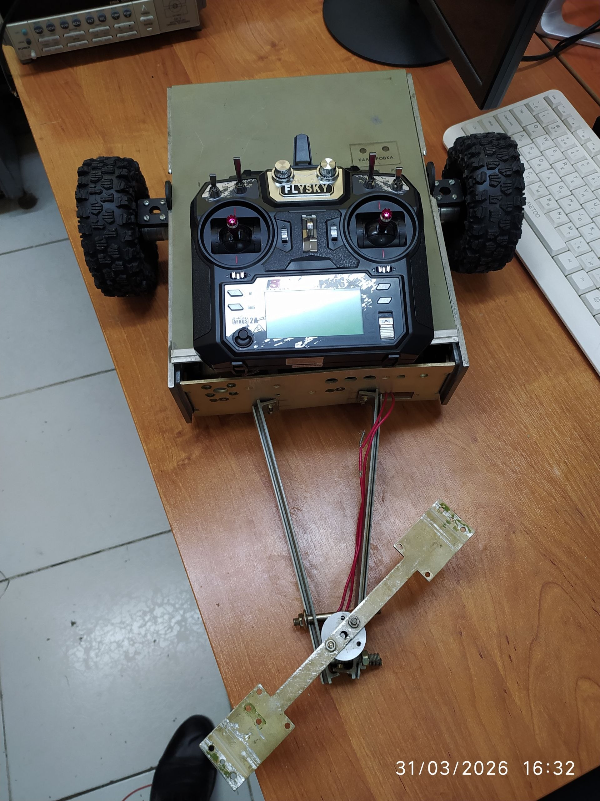
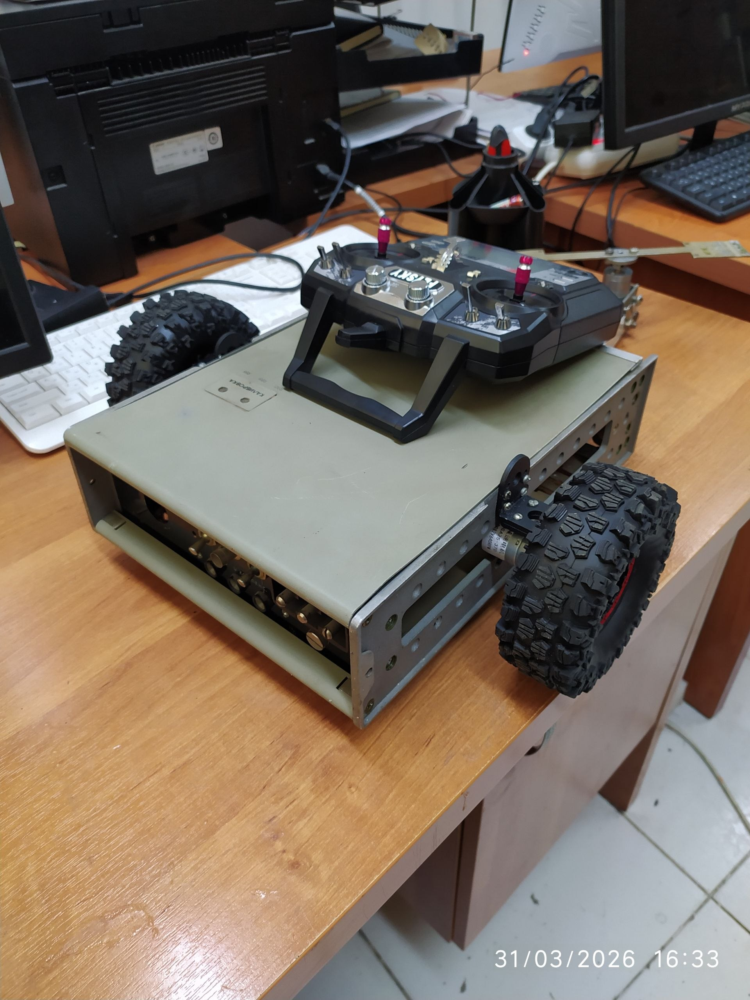

EMBEDDED
Embedded Control
Practical work with microcontrollers, motor drivers, sensors and low-level control logic. The focus is on connecting electronics with physical systems and developing firmware that produces predictable hardware behavior.
ENGINEERING / MECHATRONICS
Building practical systems where mechanics, electronics and embedded software work together to produce controlled physical motion.
EMBEDDED
Practical work with microcontrollers, motor drivers, sensors and low-level control logic. The focus is on connecting electronics with physical systems and developing firmware that produces predictable hardware behavior.
MOTION
Development and testing of electromechanical motion systems using stepper motors, drivers, belts and linear mechanisms. Motion is controlled through programmable position, direction and speed parameters.
ROBOTICS
Hands-on development of robotic platforms combining mechanical structures, actuators, electronics and control systems. The goal is to move from individual components to complete working machines.
DEVELOPMENT
The engineering workflow covers mechanical assembly, electrical integration, firmware development, calibration and iterative testing. Each prototype is used as a practical platform for developing the next level of the system.
PROJECT 01
A compact one-axis linear motion system developed as a practical mechatronics platform for studying electromechanical integration, embedded control and programmable motion. The system combines a belt-driven linear mechanism with a NEMA17 stepper motor, an A4988 stepper driver and an Arduino Uno R3 controller. The motor is powered from a 12 V supply, while the Arduino generates STEP and DIRECTION control signals for the driver. The linear axis provides an 800 mm working range, allowing the carriage to be moved along the X-axis through programmed motion sequences. The system was assembled and tested from the component level, including motor wiring, driver configuration, power connection, controller programming and mechanical motion testing. Motion can be controlled by adjusting the number of motor steps, movement direction and stepping rate, making it possible to implement repeatable linear positioning and different programmed movement sequences. The project provides practical experience across mechanical assembly, electronics, stepper-motor control and embedded programming, and serves as a foundation for further development with limit switches, automated homing, improved positioning accuracy and more advanced motion-control functions.
Overview of the one-axis linear motion system, including the NEMA17 stepper motor, A4988 driver, Arduino Uno, power supply, wiring and belt-driven linear mechanism.
Demonstration of the carriage moving along the 800 mm linear working range under programmed STEP/DIR stepper-motor control.
PROJECT 02
A custom-built robotic vehicle developed as a practical platform for exploring mobile robotics, mechanical design, remote control and electromechanical systems. The vehicle is based on a rigid metal chassis with four large off-road wheels and a mechanically actuated front assembly. The platform was assembled from individual mechanical components and adapted for remote-controlled operation using a FlySky radio transmitter. The project combines mechanical fabrication, chassis construction, wheel and steering mechanisms, electrical wiring and radio-control integration. The design provides a foundation for further development of a remotely controlled robotic platform, including improved drive control, steering, onboard electronics and autonomous functions.

